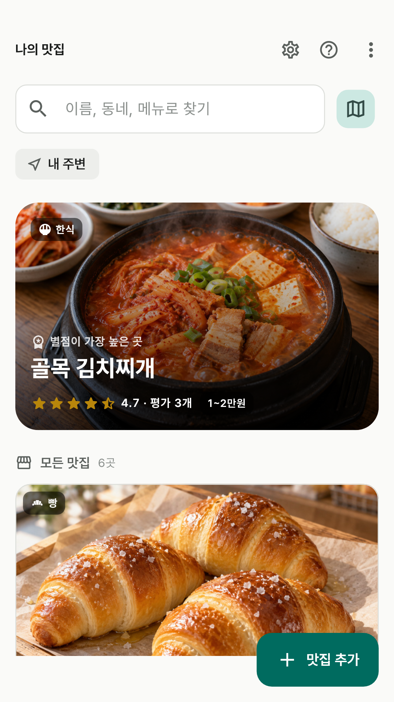
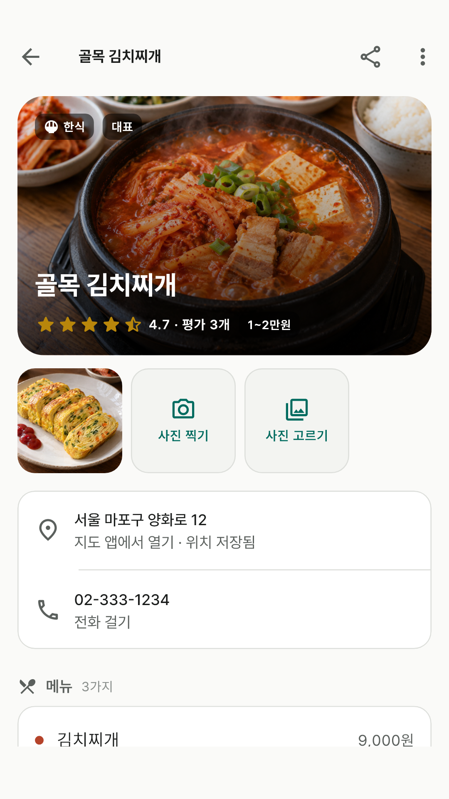
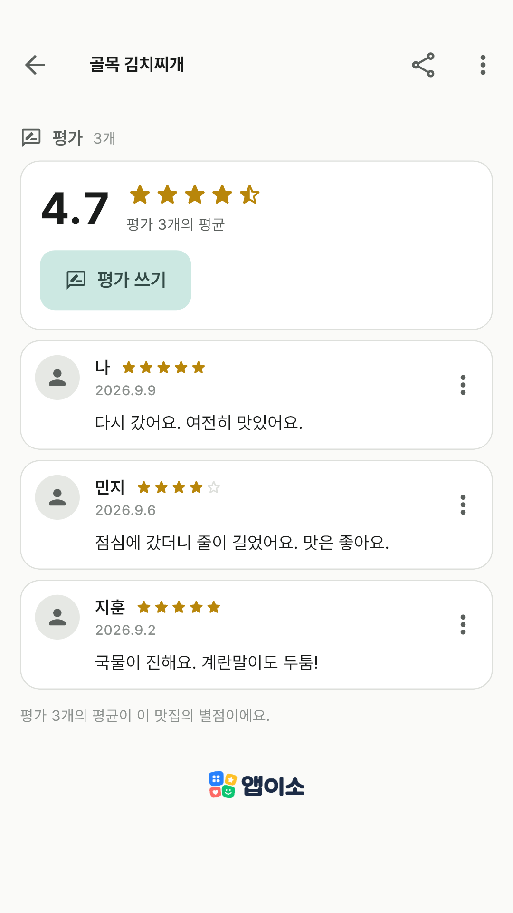
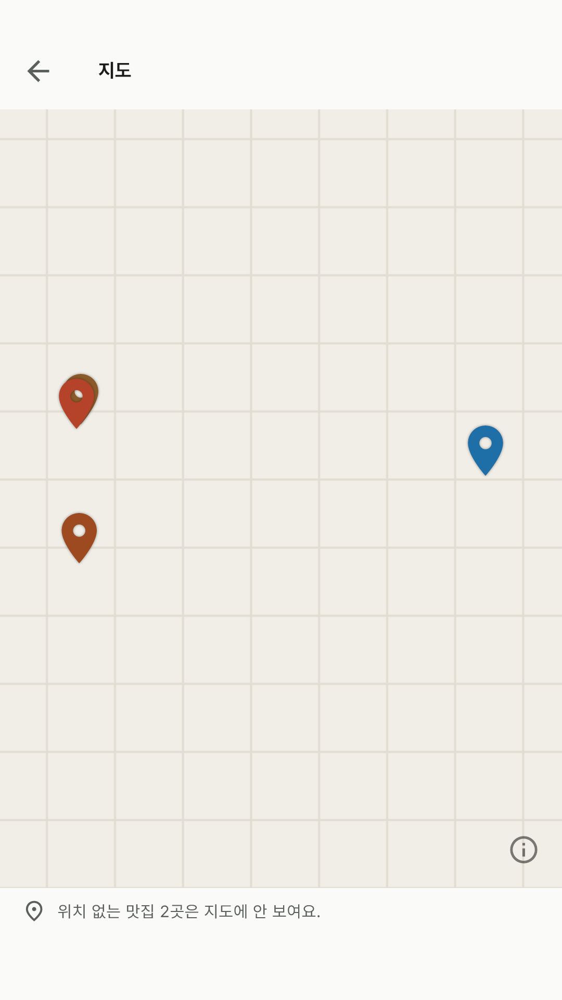
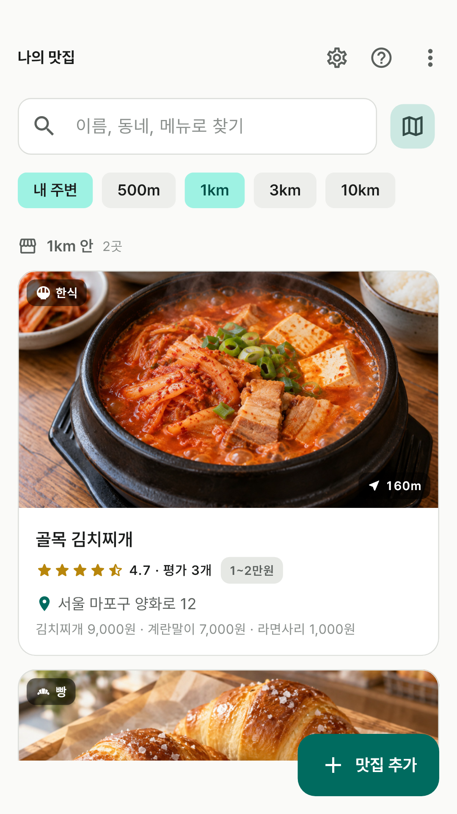
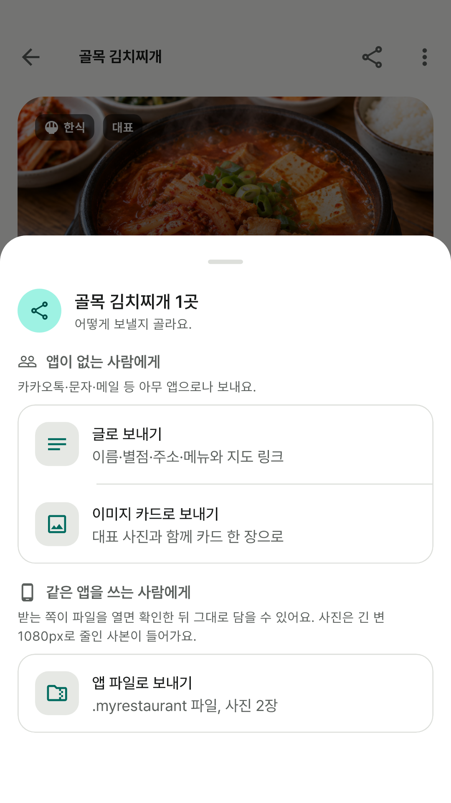
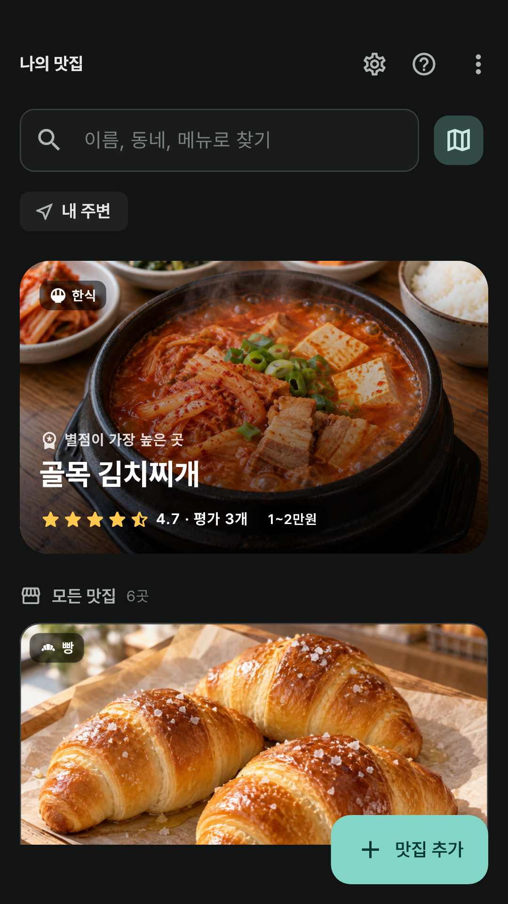

사진으로 남기는 카드
가게 이름만 적어도 되고, 주소·전화·메뉴·설명·가격대는 아는 만큼만. 사진은 다섯 장까지, 대표 사진은 카드 위에 보여요.
앱이소 나의 맛집에 다녀온 곳을 카드로 모아요.
내 주변에서 찾고, 지도에서 보고, 친구에게 보내요.
가게 이름만 적어도 되고, 주소·전화·메뉴·설명·가격대는 아는 만큼만. 사진은 다섯 장까지, 대표 사진은 카드 위에 보여요.
맛집을 저장한 뒤 별점과 한마디를 남겨요. 한 집에 여러 사람이 여러 번 남길 수 있고, 카드의 별점은 그 평균이에요.
[내 주변]을 켜면 있는 자리를 한 번 읽어 500m부터 10km까지 반경 안의 맛집을 가까운 순으로 보여 줘요. 위치는 저장하지 않아요.
위치를 저장한 맛집이 핀으로 보여요. 현재 위치, 지도에서 고르기, 주소로 찾기로 위치를 담고, 인터넷이 없어도 핀은 그대로예요.
앱이 없는 사람에게는 글이나 이미지 카드로 카톡·문자에, 같은 앱을 쓰는 사람에게는 사진까지 든 파일로 보내 그대로 담게 해요.







화면의 맛집과 사진은 기능을 설명하기 위한 예시예요. 지도 배경은 실제 앱에서 OpenStreetMap 지도가 보여요.
맛집 기록과 사진을 개발자 서버로 보내지 않아요. 사진은 긴 변 2,048px 이내의 사본으로 저장하며 갤러리 원본은 바꾸지 않아요. 내 위치는 [내 주변]이나 [현재 위치로 등록]을 누를 때 한 번 읽고 버리며, 저장하는 좌표는 맛집의 것뿐이에요.
인터넷은 배경 지도(OpenStreetMap)와 [주소로 찾기]에만 쓰고, 보내는 값은 지도 영역과 주소 글자뿐이에요. 폰의 구글 자동 백업에는 맛집 목록이 포함될 수 있어요(사진은 제외).